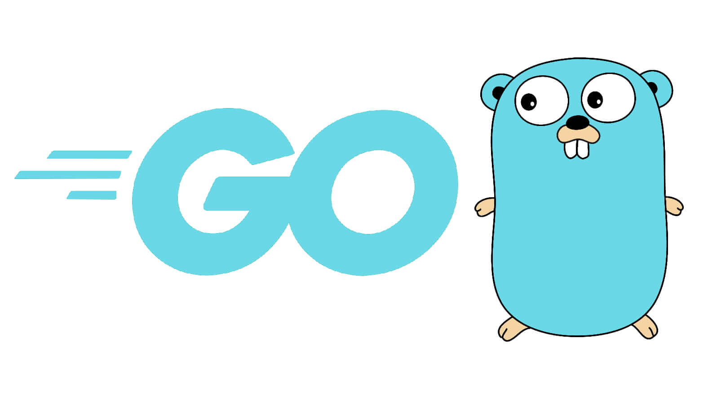

История создания
Язык Go был разработан в 2007 году в компании Google тремя инженерами: Робом Пайком, Кеном Томпсоном и Робертом Гризмером.
Основной задачей языка было устранение недостатков существующих языков программирования, таких как сложность и медлительность.
“Скорость, надежность, эффективность — вот три основных принципа языка Go.” — Разработчики Go
Краткий обзор
Go сочетает простоту синтаксиса с мощными инструментами, включая:
- Компиляцию в исполняемые файлы
- Быструю сборку мусора
- Поддержку многопоточности
Популярные области применения Go:
- Серверная разработка
- Облачные сервисы
- Микросервисы
Особенности языка Go
- Поддержка статической типизации
- Высокая скорость выполнения
- Простота изучения
| Год | Событие |
|---|---|
| 2009 | Go стал открытым проектом |
| 2012 | Первая стабильная версия Go 1.0 |
| Источник: Google | |
Примеры кода
Пример программы на Go:
package main
import "fmt"
func main() {
fmt.Println("Hello, World!")
}
Пример использования функции для подсчета суммы:
package main
import "fmt"
func sum(a int, b int) int {
return a + b
}
func main() {
result := sum(10, 20)
fmt.Println("Сумма:", result)
}
Пример работы с циклами:
package main
import "fmt"
func main() {
for i := 1; i <= 5; i++ {
fmt.Println("Итерация:", i)
}
}